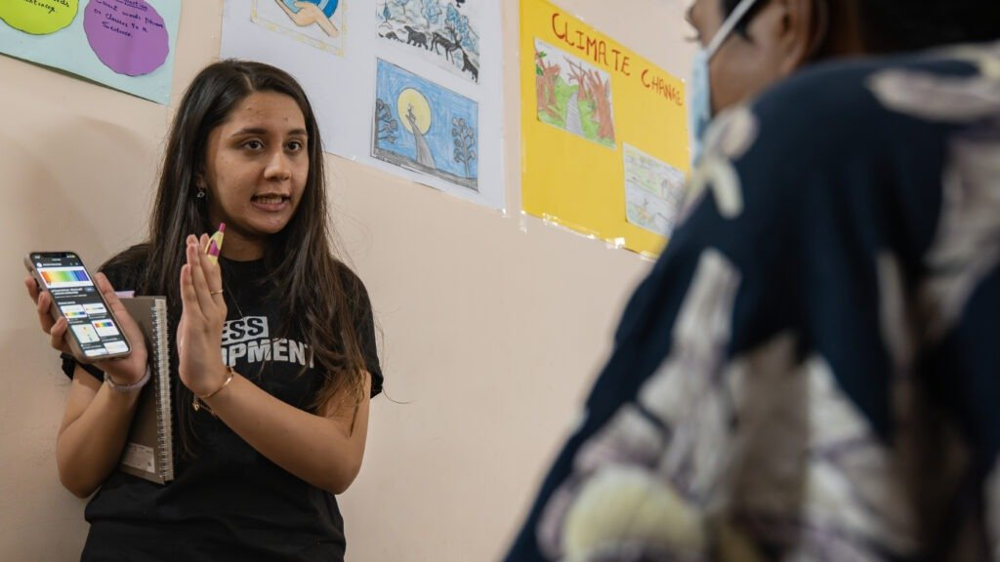
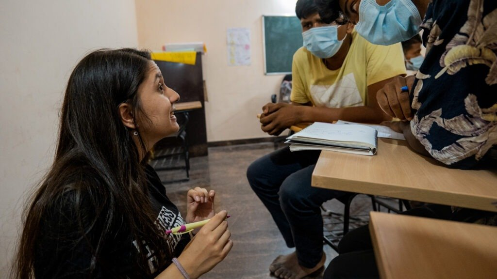

Water mixed with sewage
DJ Halli is home to migrant families from across India. Drinking water often arrives mixed with sewage and drainage, and waste management is a daily struggle. Devika, who first took up climate action at 16 campaigning against single-use plastic, chose water as her focus because it shows so clearly how a changing climate reaches people's lives.
A local voice on a global stage
As a Youth Climate Champion in Restless Development's Youth Climate Action Lab, Devika gathered evidence from residents and ran climate education sessions for young people. In November 2022 she took DJ Halli's experience to COP27 in Egypt.
What she did
Devika joined the Youth Climate Action Lab because it puts young people's voices at the centre. In DJ Halli she interviewed residents about their water and how climate change was affecting them, building the evidence to speak up on their behalf. Women balancing housework and informal jobs became her strongest allies, so she shaped a women-led approach to the work.
She also ran climate education sessions for young people in the community, encouraging them to see themselves as changemakers. At COP27 she spoke on transforming education for sustainable development through youth climate action, and helped run #MissingMajority sessions so that young people who could not travel to the conference were still heard.
How she grew
The experience showed Devika how much young people can achieve when they are given support, something she felt had been missing for her. It also showed her that people from very different communities can come together around a shared goal. She hoped to work with more communities, represent their experience of climate change internationally, and widen climate education.
“I believe we are the leaders of tomorrow but our job starts today.”Devika, Youth Climate Champion